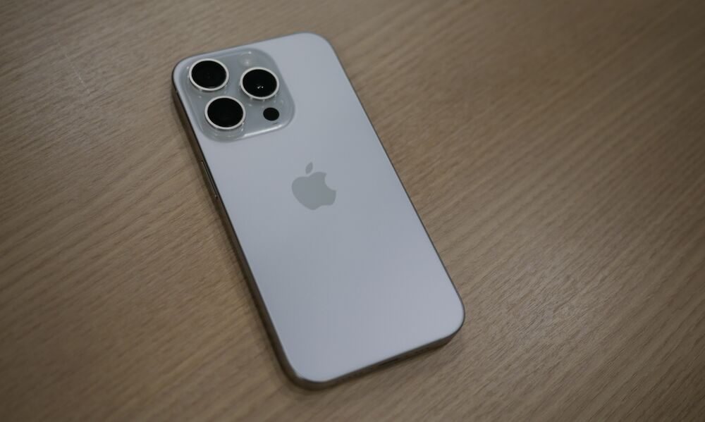

Seguro Residencial
Proteção completa para o seu lar
Proteja o seu lar de imprevisto com coberturas, ajudamos você com segurança da sua casa e trazendo tranquilidade ao seu lar

Seguro Residencial
Proteja o seu lar de imprevisto com coberturas, ajudamos você com segurança da sua casa e trazendo tranquilidade ao seu lar
Coberturas
Escolha entre coberturas básicas e adicionais que se adaptam ao seu estilo de vida e às necessidades da sua família.
O seguro residencial é um serviço desenvolvido para oferecer segurança, proteção financeira e tranquilidade aos proprietários e moradores de imóveis. A casa é um dos patrimônios mais importantes que uma pessoa pode construir ao longo da vida, sendo o local onde são guardados bens materiais, lembranças e momentos especiais com a família. Entretanto, nenhum imóvel está livre de imprevistos. Incêndios, problemas elétricos, roubos e fenômenos naturais podem acontecer a qualquer momento, causando prejuízos financeiros e emocionais. Pensando nisso, o Seguro Residencial Completo foi criado para garantir que o segurado tenha suporte e assistência sempre que precisar. Nossa modalidade de seguro residencial conta com quatro coberturas essenciais: Danos Elétricos, Incêndio, Roubo e Furto Qualificado e Vendaval e Fenômenos Naturais. Juntas, essas coberturas oferecem uma proteção ampla, permitindo que o segurado tenha mais tranquilidade em seu dia a dia e a certeza de que seu patrimônio estará protegido contra diversas situações inesperadas.
Os equipamentos eletrônicos e eletrodomésticos fazem parte da rotina de qualquer residência. Geladeiras, televisores, computadores, micro-ondas, máquinas de lavar, aparelhos de ar-condicionado e diversos outros dispositivos representam um investimento significativo para as famílias. No entanto, problemas na rede elétrica, oscilações de energia, curtos-circuitos e descargas atmosféricas podem causar danos sérios a esses equipamentos. Com a cobertura de Danos Elétricos, o segurado conta com proteção para reparar ou substituir equipamentos danificados por eventos elétricos cobertos pela apólice. Essa garantia ajuda a evitar gastos inesperados e proporciona mais segurança financeira para toda a família. Além disso, essa cobertura é especialmente importante em regiões que sofrem frequentemente com quedas de energia ou tempestades, situações que podem comprometer o funcionamento de diversos aparelhos eletrônicos de forma simultânea.
Os incêndios estão entre os eventos mais graves que podem ocorrer em uma residência. Um pequeno curto-circuito, um vazamento de gás, um aparelho elétrico defeituoso ou até um acidente doméstico podem provocar um incêndio de grandes proporções, causando danos à estrutura do imóvel e colocando em risco a segurança de todos os moradores. A cobertura de Incêndio garante proteção financeira para os prejuízos causados por incêndios, explosões e danos decorrentes de fumaça. Dependendo das condições contratadas, a indenização pode ser utilizada para realizar reparos na residência, reconstruir áreas danificadas ou substituir bens perdidos no sinistro. Ter essa cobertura significa contar com apoio em um dos momentos mais difíceis que um proprietário pode enfrentar, reduzindo os impactos financeiros e ajudando a recuperar o patrimônio de maneira mais rápida. Cobertura de Roubo e Furto Qualificado A segurança residencial é uma preocupação constante para muitas famílias. Infelizmente, casos de invasão e roubo podem ocorrer mesmo em regiões consideradas tranquilas. Além do prejuízo financeiro, essas situações também provocam sensação de insegurança e desconforto para os moradores. Por isso, o Seguro Residencial Completo oferece cobertura para Roubo e Furto Qualificado, garantindo proteção para diversos bens existentes na residência, como eletrodomésticos, aparelhos eletrônicos, móveis e outros objetos de valor previstos na apólice. Essa cobertura permite que o segurado receba indenização pelos prejuízos sofridos, auxiliando na reposição dos bens perdidos e proporcionando maior tranquilidade para toda a família.
As mudanças climáticas e os eventos naturais extremos têm se tornado cada vez mais frequentes. Tempestades, ventos fortes, granizo e queda de árvores podem causar danos significativos às residências, como destelhamentos, infiltrações, quebra de vidros e danos estruturais. Com a cobertura de Vendaval e Fenômenos Naturais, o segurado conta com proteção contra diversos eventos da natureza que possam comprometer a segurança do imóvel. Em caso de danos cobertos, o seguro auxilia nos custos de reparo e recuperação da residência, evitando que o proprietário tenha de arcar sozinho com despesas inesperadas. Essa proteção é fundamental para garantir mais segurança e preservar o patrimônio diante de situações que estão fora do controle dos moradores.
Contratar um seguro residencial é uma decisão inteligente para quem deseja proteger seu patrimônio e oferecer mais segurança à família. Além da proteção financeira, o seguro proporciona tranquilidade, pois o segurado sabe que poderá contar com suporte em momentos difíceis e imprevistos. Com as coberturas de Danos Elétricos, Incêndio, Roubo e Furto Qualificado e Vendaval e Fenômenos Naturais, o Seguro Residencial Completo oferece uma solução abrangente para proteger sua casa, seus bens e o bem-estar de todos os moradores. Seu lar é mais do que um imóvel. É o lugar onde sua história é construída todos os dias. Proteja o que realmente importa e viva com a tranquilidade de saber que sua residência está preparada para enfrentar qualquer imprevisto.
Seguro auto
Proteja o seu automovel de imprevisto com coberturas, ajudamos você com segurança da sua casa e trazendo tranquilidade ao seu veiculo.
Coberturas
Escolha entre coberturas básicas e adicionais que se adaptam ao seu estilo de vida e às necessidades da sua família.
O seguro automóvel é um serviço desenvolvido para oferecer proteção, segurança financeira e tranquilidade aos proprietários de veículos. O automóvel faz parte da rotina de milhões de pessoas, sendo utilizado para trabalho, estudos, viagens e diversas atividades do dia a dia. Além de representar um importante patrimônio, ele também proporciona mobilidade e praticidade. No entanto, nenhum motorista está livre de imprevistos. Colisões, roubos, furtos e danos causados por fenômenos naturais podem acontecer a qualquer momento, gerando prejuízos elevados e transtornos inesperados. Pensando nisso, o Seguro Automóvel Completo foi criado para garantir que o segurado tenha suporte sempre que precisar. Nossa modalidade conta com quatro coberturas essenciais: Colisão, Roubo e Furto, Fenômenos Naturais e Danos a Terceiros. Juntas, essas coberturas oferecem uma proteção ampla, permitindo que o motorista conduza seu veículo com muito mais tranquilidade e segurança.
Acidentes de trânsito podem acontecer mesmo com motoristas experientes e cuidadosos. Uma distração, condições climáticas desfavoráveis ou ações de terceiros podem resultar em colisões capazes de causar danos significativos ao veículo. Com a cobertura de Colisão, o segurado conta com proteção para os prejuízos causados por acidentes envolvendo seu automóvel. Dependendo das condições da apólice, o seguro cobre os custos de reparo ou, em casos de perda total, garante a indenização prevista no contrato. Essa cobertura proporciona mais segurança financeira, evitando que despesas elevadas comprometam o orçamento do proprietário do veículo.
O roubo e o furto de veículos continuam sendo uma das maiores preocupações dos motoristas. Mesmo adotando medidas de segurança, nenhum proprietário está totalmente livre desse tipo de ocorrência. A cobertura de Roubo e Furto garante proteção financeira caso o veículo seja roubado ou furtado. Se o automóvel não for recuperado pelas autoridades dentro das condições estabelecidas na apólice, o segurado poderá receber a indenização correspondente. Dessa forma, o proprietário evita grandes prejuízos e pode recuperar seu patrimônio com muito mais tranquilidade.
Eventos da natureza podem causar danos inesperados aos veículos. Enchentes, quedas de árvores, tempestades, granizo e ventos fortes são situações que podem comprometer seriamente a estrutura e o funcionamento do automóvel. Com a cobertura de Fenômenos Naturais, o segurado possui proteção contra diversos eventos climáticos previstos na apólice. Caso o veículo seja danificado por essas situações, o seguro auxilia nos custos de reparo ou indenização, reduzindo os impactos financeiros causados por acontecimentos que fogem do controle do motorista. Essa cobertura oferece mais tranquilidade principalmente para quem vive em regiões sujeitas a fortes chuvas e tempestades.
Em um acidente de trânsito, nem sempre apenas o veículo do segurado é afetado. Em muitas situações, outros automóveis, propriedades ou até mesmo pessoas podem sofrer prejuízos. A cobertura de Danos a Terceiros auxilia no pagamento das indenizações por danos materiais e, conforme as condições da apólice, também pode cobrir danos corporais causados a outras pessoas em um acidente de responsabilidade do segurado. Essa proteção evita que o motorista tenha que arcar sozinho com despesas que podem atingir valores elevados, proporcionando mais segurança financeira e tranquilidade no trânsito.
Contratar um seguro automóvel é investir na proteção do seu patrimônio e na sua segurança. Além da cobertura financeira contra diversos imprevistos, o seguro oferece a tranquilidade de saber que você contará com suporte especializado sempre que precisar. Com as coberturas de Colisão, Roubo e Furto, Fenômenos Naturais e Danos a Terceiros, o Seguro Automóvel Completo oferece uma solução abrangente para proteger seu veículo em diferentes situações do dia a dia. Seu automóvel representa liberdade, praticidade e conquista. Proteja esse patrimônio e dirija com a confiança de que estará preparado para enfrentar qualquer imprevisto.
Seguro Celular
Proteja seu smartphone contra imprevistos do dia a dia e conte com coberturas essenciais para utilizar seu aparelho com mais tranquilidade e segurança.

Coberturas
Conte com coberturas essenciais para proteger seu smartphone contra situações inesperadas que podem acontecer no dia a dia.
O celular se tornou uma ferramenta essencial para a rotina de muitas pessoas. Utilizado para comunicação, estudos, trabalho, pagamentos e armazenamento de informações importantes, o smartphone faz parte do dia a dia e qualquer imprevisto pode causar transtornos e prejuízos financeiros. O Seguro Celular foi desenvolvido para oferecer mais segurança ao proprietário do aparelho, proporcionando proteção diante de situações inesperadas. Nossa modalidade conta com duas coberturas essenciais: Roubo e Furto Qualificado e Danos Acidentais. Essas coberturas ajudam a reduzir os prejuízos financeiros, permitindo que o segurado utilize seu celular com mais tranquilidade.
O roubo ou furto de um celular pode causar diversos transtornos. Além da perda do aparelho, o proprietário pode ficar sem acesso a informações pessoais, contatos, aplicativos e outros recursos importantes para sua rotina. A cobertura de Roubo e Furto Qualificado garante a proteção prevista na apólice caso o aparelho seja roubado ou furtado mediante as condições estabelecidas no contrato. Essa cobertura ajuda a reduzir os prejuízos financeiros causados pela perda do celular, oferecendo mais segurança para que o segurado possa enfrentar esse tipo de situação inesperada com maior tranquilidade.
Acidentes podem acontecer a qualquer momento. Quedas, impactos e outras situações inesperadas podem causar danos ao aparelho e comprometer seu funcionamento, gerando despesas que muitas vezes não estavam previstas. Com a cobertura de Danos Acidentais, o segurado conta com a proteção prevista na apólice caso o celular sofra danos decorrentes de um acidente coberto pelo seguro. Essa cobertura oferece suporte para reduzir os impactos financeiros causados pelos danos ao aparelho, proporcionando mais tranquilidade para o segurado continuar utilizando seu smartphone no dia a dia.
Contratar um Seguro Celular é uma forma de proteger um bem que está presente em praticamente todos os momentos da rotina. Mais do que proteger o aparelho, o seguro oferece tranquilidade para que você possa lidar melhor com situações inesperadas. Com as coberturas de Roubo e Furto Qualificado e Danos Acidentais, o Seguro Celular oferece segurança e proteção financeira diante dos principais riscos que podem afetar seu smartphone. Seu celular está com você todos os dias. Proteja seu aparelho e tenha mais tranquilidade sabendo que poderá contar com proteção quando mais precisar.
Seguro Eletrônicos
Proteja seus dispositivos eletrônicos contra imprevistos e conte com coberturas essenciais para manter seus equipamentos mais seguros.
Coberturas
Conte com coberturas essenciais para proteger seus dispositivos eletrônicos contra situações inesperadas.
Os dispositivos eletrônicos fazem parte da rotina e são utilizados para estudar, trabalhar, se comunicar e se divertir. Notebooks, computadores, tablets e outros equipamentos representam investimentos importantes e podem sofrer prejuízos causados por situações inesperadas. O Seguro de Dispositivos Eletrônicos foi desenvolvido para oferecer mais segurança aos seus equipamentos. Nossa modalidade conta com duas coberturas essenciais: Roubo e Furto Qualificado e Danos Elétricos. Essas coberturas ajudam a reduzir os prejuízos financeiros causados por imprevistos, permitindo que o segurado tenha mais tranquilidade.
O roubo ou furto de um dispositivo eletrônico pode causar prejuízos financeiros e diversos transtornos. Além da perda do equipamento, muitas pessoas podem perder o acesso a arquivos, documentos, trabalhos e outras informações importantes armazenadas no dispositivo. A cobertura de Roubo e Furto Qualificado garante a proteção prevista na apólice caso o dispositivo segurado seja roubado ou furtado mediante as condições estabelecidas no contrato. Essa cobertura ajuda a reduzir os prejuízos financeiros causados pela perda do equipamento, oferecendo mais segurança para que o segurado possa lidar com esse tipo de situação inesperada.
Problemas elétricos podem acontecer de forma inesperada e causar danos significativos aos dispositivos eletrônicos. Oscilações de energia, curtos-circuitos e outros problemas podem comprometer o funcionamento dos equipamentos e gerar despesas para reparo ou substituição. Com a cobertura de Danos Elétricos, o segurado conta com a proteção prevista na apólice caso seu dispositivo sofra danos decorrentes de eventos elétricos cobertos pelo seguro. Essa cobertura oferece mais segurança diante de situações que podem comprometer o funcionamento do equipamento, ajudando a reduzir os impactos financeiros causados por esse tipo de imprevisto.
Contratar um Seguro de Dispositivos Eletrônicos é uma forma de proteger equipamentos importantes para sua rotina. Mais do que proteger o bem material, o seguro oferece maior tranquilidade diante de situações inesperadas. Com as coberturas de Roubo e Furto Qualificado e Danos Elétricos, o Seguro de Dispositivos Eletrônicos oferece proteção financeira contra alguns dos principais riscos que podem afetar seus equipamentos. Seus dispositivos fazem parte da sua rotina. Proteja seus equipamentos e tenha mais tranquilidade sabendo que poderá contar com proteção quando mais precisar.
Seguro Bicicleta
Proteja sua bicicleta contra imprevistos e conte com coberturas essenciais para pedalar com mais tranquilidade e segurança.
Coberturas
Conte com coberturas essenciais para proteger sua bicicleta contra situações inesperadas durante sua rotina.
A bicicleta é utilizada por muitas pessoas como meio de transporte, prática esportiva e lazer. Além de representar um investimento importante, ela faz parte da rotina e pode estar exposta a diferentes situações inesperadas. O Seguro Bicicleta foi desenvolvido para oferecer mais segurança ao seu patrimônio. Nossa modalidade conta com duas coberturas essenciais: Roubo e Furto Qualificado e Danos Acidentais. Essas coberturas ajudam a reduzir os prejuízos financeiros causados por imprevistos, permitindo que o segurado utilize sua bicicleta com mais tranquilidade.
O roubo ou furto de uma bicicleta pode causar prejuízos financeiros e diversos transtornos para o proprietário. Dependendo do modelo e dos equipamentos utilizados, a perda do bem pode representar um investimento significativo. A cobertura de Roubo e Furto Qualificado garante a proteção prevista na apólice caso a bicicleta segurada seja roubada ou furtada mediante as condições estabelecidas no contrato. Essa cobertura ajuda a reduzir os prejuízos financeiros causados pela perda da bicicleta, oferecendo mais segurança para que o segurado possa enfrentar esse tipo de situação inesperada com maior tranquilidade.
Acidentes podem acontecer durante a utilização da bicicleta. Quedas, colisões e outros imprevistos podem causar danos à estrutura ou aos componentes, comprometendo seu funcionamento e gerando despesas para reparos. Com a cobertura de Danos Acidentais, o segurado conta com a proteção prevista na apólice caso sua bicicleta sofra danos decorrentes de um acidente coberto pelo seguro. Essa cobertura ajuda a reduzir os impactos financeiros causados pelos danos ao bem, proporcionando mais tranquilidade para o segurado utilizar sua bicicleta no dia a dia.
Contratar um Seguro Bicicleta é uma forma de proteger um bem importante para sua rotina. Mais do que proteger o patrimônio, o seguro oferece maior tranquilidade diante de situações inesperadas. Com as coberturas de Roubo e Furto Qualificado e Danos Acidentais, o Seguro Bicicleta oferece proteção financeira diante dos principais riscos que podem afetar sua bicicleta. Sua bicicleta acompanha você em diferentes momentos. Proteja seu bem e tenha mais tranquilidade sabendo que poderá contar com proteção quando mais precisar.
Solicite agora sua cotação personalizada e durma tranquilo todas as noites.
Fazer Login agora